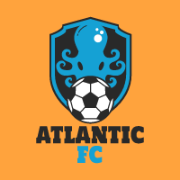
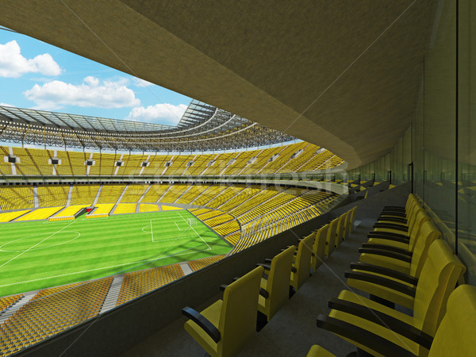
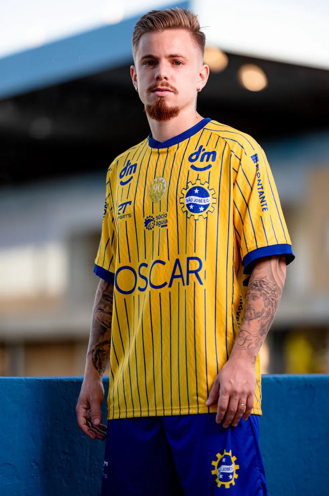

O Estádio Ocean Arena, casa do time de futebol Atlantic, é um verdadeiro templo do esporte. Localizado na beira-mar, o estádio é conhecido por suas vibrantes cores amarelo e azul, que adornam desde as arquibancadas até o gramado, criando um ambiente energizante e acolhedor. Com capacidade para 40 mil torcedores, a Ocean Arena oferece uma experiência inesquecível para os fãs, que se reúnem para apoiar o Atlantic em cada partida. O estádio é equipado com instalações modernas e uma acústica projetada para amplificar o som das torcidas, tornando cada jogo uma verdadeira festa do futebol.

Quando o Atlantic foi fundado, seus criadores buscaram inspiração na natureza ao redor da cidade costeira onde o clube surgiu. O amarelo foi escolhido para representar o sol que brilha intensamente sobre o mar, enquanto o azul simboliza as águas profundas e serenas do oceano. Assim, o uniforme amarelo e azul do Atlantic tornou-se um tributo à beleza natural da região e à ligação entre o clube e sua comunidade.